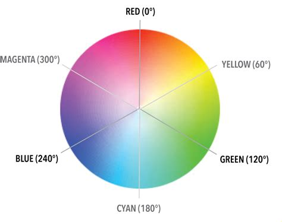

Ways to represent color
- color - this property styles an element’s foreground color .
- background-color - this property styles an element’s background color.
There are 4 ways to represent color:
- Named colors — there are 147 named colors.
- Hexadecimal or hex colors
- Hexadecimal is a number system with has sixteen digits, 0 to 9 followed by “A” to “F”.
- Hex values always begin with # and specify values of red, blue and green using hexademical numbers such as #23F41A.
- RGB
- RGB colors use the rgb() syntax with one value for red, one value for blue and one value for green.
- RGB values range from 0 to 255 and look like this: rgb(7, 210, 50).
- HSL
- HSL stands for hue (the color itself), saturation (the intensity of the color), and lightness (how light or dark a color is).
- Hue ranges from 0 to 360 and saturation and lightness are both represented as percentages like this: hsl(200, 20%, 50%).
- Saturation refers to the intensity or purity of the color / amount of gray in the color. If you imagine a line segment drawn from the center of the color wheel to the perimeter, the saturation is a point on that line segment. The saturation increases towards 100% as the point gets closer to the edge (the color becomes more rich). The saturation decreases towards 0% as the point gets closer to the center (the color becomes more gray).
- Lightness: 0% makes the color darker, closer to black. 
- HSL is convenient for adjusting colors. In RGB, making the color a little darker may affect all three color components. In HSL, that’s as easy as changing the lightness value. HSL is also useful for making a set of colors that work well together by selecting various colors that have the same lightness and saturation but different hues.
- Please note that lightness is a different concept to brightness. Graphic design software (such as Photoshop and GIMP) have color pickers that use hue, saturation, and brightness — but brightness only adds black, whereas lightness offers both white and black.
You can add opacity to color in RGB (rgba) and HSL (hsla) by adding a fourth value: Alpha, a, which is represented as a percentage. ex : 0.5 (= 50% opacity), 0.15 (= 15%).
Alpha is a decimal number from zero to one. If alpha is zero, the color will be completely transparent. If alpha is one, the color will be opaque.
ex: color: rgba(234, 45, 98, 0.33);